Materia: Menú, Diseño y Ambientación de Restaurantes · Docente: Silvina Galacho
Trabajo Práctico Integrador — Diseño y Formato de Menú
"Donde el fuego transforma cada experiencia."
El Proyecto
Leñado es un restaurante premium de cocina a fuego vivo ubicado en Mar del Plata. La propuesta surge de una convicción: el fuego de leña es el primer y más honesto lenguaje de la gastronomía.
El proyecto fusiona tres tradiciones culinarias —la parrilla argentina, el BBQ norteamericano y la cocina latinoamericana— bajo una sola técnica que las unifica: la leña como fuente de calor, sabor y espectáculo.
No es una parrilla tradicional, no es una hamburguesería, no es un restaurante genérico. Leñado es una experiencia gastronómica centrada en el fuego, con identidad propia, diseño coherente y un compromiso absoluto con la calidad de cada plato.
"No venimos a servir comida. Venimos a crear el momento en que todo se detiene porque algo en el plato, en el aroma, en el ambiente, te recuerda por qué vale la pena estar aquí."
Ofrecer una experiencia gastronómica auténtica centrada en la cocina a leña, donde cada plato refleje el respeto por los ingredientes, las tradiciones culinarias y la excelencia en el servicio. Buscamos que cada visita sea un momento memorable que invite a reconectarse con lo esencial.
Convertirnos en el referente gastronómico de Mar del Plata en cocina a fuego vivo, reconocidos por turistas y locales como el destino de elección para quienes buscan una propuesta con carácter propio y un compromiso permanente con la calidad.
Autenticidad en cada decisión, calidad sin límites, tradición viva, hospitalidad genuina, pasión por el fuego e innovación controlada. Son la columna vertebral que define quiénes somos y cómo nos relacionamos con clientes, equipo y entorno.
Actividad 1La carta habla antes que el mozo
El análisis de quiénes somos define cómo debe verse y comunicar nuestra carta. Cada decisión de diseño parte de la identidad del proyecto.
Restaurante premium à la carte con foco en cocina a fuego vivo. Categoría: steakhouse contemporáneo con influencias BBQ y latinoamericanas. Capacidad: 85 plazas (70 en mesas + 15 en barra de parrilla).
25 a 55 años, nivel socioeconómico medio-alto. Profesionales, turistas gastronómicos y foodies apasionados. Valoran la experiencia, el origen de los ingredientes y la técnica visible.
Fusión de la parrilla argentina, el BBQ norteamericano y la cocina a fuego latinoamericana. Técnica única y unificadora: la leña como protagonista absoluta de cada preparación.
Premium accesible. Ticket promedio estimado: $18.000–$28.000 ARS por persona con bebida. Posicionamiento por encima de la media local pero sin llegar al segmento de lujo.
Inmersiva y relajada con momentos teatrales. El fuego visible, los tiempos de cocción lentos y el servicio consultivo crean una experiencia que dura más de lo previsto —y se disfruta por eso.
Moderno-artesanal premium. Oscuro, con acentos en cobre y fuego. No minimalista ni clásico: una estética de refugio de montaña contemporáneo donde el diseño acompaña sin competir con el plato.
Las siete preguntas que definen el diseño de la carta de Leñado
Calidez, autenticidad, confianza y exclusividad accesible. Quien toma el menú en sus manos debe sentir que está ante algo especial: un lugar con historia, con técnica, con carácter propio. No glamour frío, sino calor verdadero. La carta debe generar anticipación antes de leer el primer plato.
Cubierta de cuero oscuro natural con el nombre LEÑADO grabado en relieve o pirograbado. Interior en papel offset texturado 250g, color crema cálido. Sin plastificados. Sin laminados brillantes. La carta se siente artesanal porque lo es. Detalle en hilo de cobre en la encuadernación.
Moderna con esencia artesanal. No minimalista (necesita descripciones que seduzcan), no clásica (la propuesta es disruptiva), no excesivamente creativa (el protagonista es el plato, no el diseño). El diseño sirve a la identidad sin superarla. Cada elemento tiene una razón de ser.
Primarios: Negro carbón, marrón oscuro, gris piedra.
Secundarios: Cobre, naranja fuego, beige cálido.
Paleta que evoca el fuego, los materiales nobles y la oscuridad cálida de una brasa encendida.
Titulares de sección: Oswald (sans-serif condensada, moderna, con carácter).
Nombres de platos: Playfair Display (serif elegante con reminiscencia artesanal).
Descripciones: Inter Light (sin serifa, legible, discreta).
Combinación que equilibra tradición y contemporaneidad.
No tendrá fotos en el menú físico. Las fotografías empobrecen la expectativa cuando no están a la altura del producto real. En Leñado, las descripciones construyen la imagen mental del comensal: más poderosa y personalizada que cualquier foto. Las imágenes viven en redes sociales, no en la carta.
Evocador, sensorial y técnicamente preciso. No "carne asada" sino "entraña al fuego vivo". No "pollo al horno" sino "cochinita ahumada cuatro horas en horno de barro". El lenguaje nombra el origen, la técnica y el resultado. Cada descripción genera anticipación y justifica el precio. Oraciones cortas, sin adornos innecesarios, con una idea central por plato.
Actividad 3Análisis estratégico
La ingeniería de menú es la herramienta que convierte la carta en una palanca de rentabilidad, identidad y venta.
Es el plato que concentra la filosofía entera de Leñado: técnica, tiempo, diferenciación. Máxima percepción de valor, alta demanda proyectada, generador de identidad de marca y el primero en mente al recordar el restaurante.
El chorizo tiene un costo de materia prima bajo con alta percepción de calidad por ser de elaboración propia. Las ribs utilizan un corte de menor precio que se transforma con técnica y tiempo. Ambos tienen el margen más amplio de la carta.
Son los tres platos con mayor novedad para el comensal local. La curiosidad por el proceso —12 horas de cocción, ahumado visible— genera conversación y pedido. Son los que más aparecerán en fotos de clientes en redes sociales.
Son los dos platos que estarán presentes en toda la comunicación de marca. La provoleta representa el lado familiar argentino; el brisket representa la técnica diferenciadora. Juntos cuentan la historia completa de Leñado.
El fuego como técnica amortiza la inversión en infraestructura en todos los platos. El chimichurri de la casa, las hierbas frescas, el aceite de oliva y la sal parrillera aparecen en múltiples platos reduciendo el stock necesario.
Las guarniciones de vegetales a la brasa, las frutas de los postres (banana brûlée, panqueques con frutas rojas) y las hierbas frescas de los chimichurris varían según la estación. Esto permite actualizar la carta sin cambiar su estructura.
El chorizo criollo es culturalmente familiar para el público argentino: la propuesta artesanal y el chimichurri de la casa lo hacen irresistible como entrada. La banana brûlée funciona como cierre: el componente sorpresa (fruta asada en horno de leña) facilita la venta porque genera curiosidad inmediata al ser descripta. Son los más recomendados por el equipo de sala.
Actividad ExtraAnálisis comparativo
Análisis de dos restaurantes reconocidos para identificar buenas prácticas, errores y elementos aplicables al diseño de la carta de Leñado.
Parrilla argentina de alta gama · Palermo · Distinción Michelin
Carta sobria, tipografía serif clásica, sin fotos. Papel de calidad en tono crema, organización clara por cortes. Diseño que no compite con el producto.
La carta representa fielmente el concepto premium argentino. Transmite seriedad, tradición y confianza desde el primer vistazo. Diseño coherente con el espacio.
Precios discretos. Cortes ordenados por tipo, no por precio. Sin destacados artificiales: la reputación del restaurante hace el trabajo. Carta breve, profunda.
La brevedad como herramienta de confianza. La ausencia de fotos como decisión de calidad. El papel como primer objeto de experiencia.
Carta excesivamente tradicional para el concepto de Leñado. No hay storytelling del proceso. Las descripciones son demasiado escuetas.
Cocina a leña · Palermo · Referente BBQ porteño
Diseño moderno-industrial, paleta oscura, tipografía bold sans-serif. Uso de papel kraft. Estética coherente con el concepto de fuego y brasa. Sin fotos.
Alta coherencia entre la carta, el espacio y la propuesta gastronómica. El diseño de la carta anticipa la experiencia: el cliente ya sabe que va a estar frente a algo diferente.
Platos destacados con marcadores visuales claros. Carta corta con alta rotación. Descripciones técnicas que generan curiosidad y justifican el precio.
El uso del papel kraft como material: económico, artesanal y coherente. La brevedad en la carta. Las descripciones con tecnicismos que educan al cliente.
Algunas secciones resultan confusas en la organización. Precio demasiado prominente en algunos ítems, lo que puede inhibir el pedido.
Actividad 4Diseño visual
La carta física es un objeto de diseño que comunica antes de que el cliente lea una sola palabra. Cada decisión es intencional.
Representación del diseño visual de la carta
Actividad 5Menú y ambientación
La carta y la ambientación deben hablar el mismo idioma. En Leñado, ambas dicen lo mismo: fuego, autenticidad, materiales nobles.
La carta está hecha con los mismos materiales del salón: cuero, madera, hierro, superficies oscuras con detalles en cobre. El cliente toma la carta en sus manos y siente la misma textura que toca en la mesa, en la silla, en la barra. El diseño es coherente de adentro hacia afuera. La oscuridad cálida de la paleta de colores de la carta replica exactamente la iluminación ámbar del salón. No hay dissonancia visual en ningún punto de la experiencia.
Consultivo, cómplice, sin presión. El mozo no es un tomador de pedidos: es un narrador. Conoce el proceso detrás de cada plato, puede recomendar con argumentos técnicos y personales, y adapta el ritmo del servicio a cada mesa. La atención es cercana sin ser invasiva. El cliente siente que lo guían, no que lo apuran. No hay un script rígido: hay formación profunda y confianza en el equipo.
Relajada con momentos teatrales. El ritmo general es pausado: los tiempos de cocción generan espera que se disfruta. Los momentos teatrales aparecen naturalmente: el corte del brisket frente al comensal, el sonido de la grasa en la parrilla, el humo que sube del horno abierto. No es show gastronómico forzado; es técnica visible que genera maravilla genuina. La experiencia dura más de lo previsto —y nadie quiere irse.
"La carta en cuero que el cliente toma en sus manos, la luz ámbar que cae sobre la mesa, el aroma de la leña encendida: no son elementos separados. Son capítulos del mismo relato."
Actividad 6Vendeme tu restaurante
Mar del Plata tiene cientos de opciones gastronómicas. Ninguna centra su propuesta entera en la cocina a leña como técnica, espectáculo y filosofía. Leñado llega a llenar ese espacio vacío con una propuesta sólida, diferenciada y con una identidad que no puede copiarse porque nace de una convicción, no de una moda.
El fuego de leña no es decoración. Es la técnica, es la filosofía, es el diferencial que une cada decisión del proyecto.
Restaurante premium à la carte de cocina a fuego vivo. Fusión argentina, BBQ y latinoamericana bajo una sola técnica.
25-55 años, NSE medio-alto. Locales que buscan novedad con garantía, turistas que buscan autenticidad, foodies que buscan técnica.
Cuero, madera, hierro. Oscuro y cálido. La carta, el espacio y la vajilla hablan el mismo idioma: autenticidad sin artificios.
Desarrollo complementario
El menú es solo una parte del relato. La experiencia completa de Leñado se construye desde el primer aroma hasta el último contacto visual al retirarse.
Madera encendida desde las 11am. El humo suave que llega a la calle antes de ver el local es la primera comunicación de marca. Sin aromatizadores artificiales.
Jazz, blues y folk curado mensualmente. Volumen que permite la conversación. Sin playlists automáticas. La música ambienta, no protagoniza.
Luz ámbar 2400K. Spots en cada mesa. El fuego del horno como fuente de luz cálida natural. Velas de cera como complemento.
Tablas de madera para carnes, piedra negra para entradas, hierro fundido para guarniciones, cristal fino para vinos. Sin platos blancos lisos.
Aroma → fachada austera → horno visible al entrar → servicio bienvenida → carta en cuero → proceso narrado → plato en tabla → recomendación final → despedida cálida.
Delantales de cuero oscuro sobre camisa negra. Sin logos grandes. La indumentaria transmite el mismo mensaje que el espacio: artesanal, austero, con carácter.
"El objetivo no es solamente desarrollar una lista de platos, sino construir una identidad gastronómica coherente y profesional. Leñado es exactamente eso: cada decisión, desde la madera que se elige hasta el hilo con el que se encuaderna la carta, cuenta la misma historia."
TP Diseño FuncionalPlanificación espacial y operativa
Plano preliminar de Leñado en dos niveles: el nivel principal (salón vidriado hacia la calle, barra de coctelería, parrilla abierta al público y cocina) y el nivel inferior, al que se baja por la escalera (sanitarios, salón privado de eventos, depósito de secos, bodega de vinos y vestuario del personal). Cada mesa cuenta con una mesita auxiliar para servir y trinchar la carne con comodidad, orientada hacia la fachada de vidrio.
Deslizá para recorrer el plano completo
Punto 2Distribución de espacios
| Tipo | Cantidad | Plazas |
|---|---|---|
| Mesa 4 personas | 14 | 56 |
| Mesa 2 personas | 7 | 14 |
| Barra parrilla (banquetas) | 1 | 15 |
| Salón privado eventos* | 1 mesón | +10 |
| Total servicio | 21 mesas + barra | 85 |
* El salón privado del subsuelo solo opera con reserva de eventos; no cuenta en el servicio regular.
La distribución nace del concepto: la fachada vidriada deja que la calle vea el salón, la parrilla en vivo y el trinchado de la carne en la mesita auxiliar de cada mesa — orientada hacia el vidrio como marketing en vivo. En cocina, los fríos y la bacha quedan pegados a la puerta porque es con lo que los mozos más interactúan, y la mesada de pase permite retirar platos terminados sin entrar del todo a la cocina. La heladera interna evita viajes constantes al depósito, y la bodega queda junto al salón de eventos para catas y a mano de los mozos cuando piden vino en el salón principal.
Punto 3Rotación de mesas
El tiempo de permanencia por cliente incluye bienvenida + carta, entrada, plato principal (con trinchado en la mesita auxiliar) y postre opcional. Las cocciones largas (brisket 12h, tira 3h) se producen antes del servicio, por lo que el despacho es ágil y la permanencia se mantiene acotada. En la barra de parrilla tiende al piso del rango (~60 min): el comensal come frente al fuego con servicio directo del parrillero.
Almuerzo (12:30 – 15:30): 3 horas / ~75 min = aprox. 2 rotaciones (contando reseteo de mesa).
Cena (20:00 – 23:30): 3,5 horas / ~75 min = aprox. 2,5 rotaciones.
El primer turno de cena se toma sobre reserva; el segundo ingresa a partir de las 21:30. La barra rota más rápido y absorbe walk-ins sin reserva.
Almuerzo: 85 plazas × 2 rot. = 170 comensales.
Cena: 85 plazas × 2,5 rot. = ≈ 213 comensales.
Total estimado en jornada completa: ≈ 380 comensales (promedio; varía por estacionalidad y mix mesa/barra).
Con 85 plazas y ticket promedio de $23.000 ARS (mitad de rango $18k–$28k), una jornada completa de ≈380 comensales genera una facturación bruta estimada de ≈ $8.800.000 ARS. La permanencia acotada de 60–90 min permite sumar rotaciones sin resignar ticket: bebidas, postres y maridajes desde la bodega propia elevan el promedio, y la barra de parrilla aporta la rotación más rápida con la misma línea de producción. El equilibrio entre rotación ágil y margen premium es la base de la rentabilidad del formato.
Punto 4Flujograma operativo
Esquema de los flujos principales del restaurante e identificación de posibles cruces o conflictos operativos.
Punto 5Análisis de capacidad operativa
Los tres puntos de mayor presión operativa identificados en el diseño del establecimiento
Es el corazón del concepto y a la vez el sector de mayor presión: la misma línea produce para todo el salón y atiende a los 15 comensales de barra, cocinando de cara al público y a la fachada vidriada. Un error se ve en vivo. Requiere campana de extracción dimensionada sobre todo el frente, protocolo de seguridad en la barra (distancia al fuego, materiales), y en horario pico la separación de roles entre parrillero (cocina) y expedidor (despacha y atiende barra).
La cocina se diseñó para que el mozo interactúe solo con el borde: la mesada de platos terminados y la bacha están pegadas a la única puerta (⇵), de modo que retira platos y deja vajilla sucia sin entrar del todo. Es también el cuello de botella: flujo limpio (platos listos) y flujo sucio (vajilla a la bacha) comparten el mismo vano. Se resuelve con sentidos de paso señalizados, comandas por pantalla y protocolo estricto de qué lado se deja y se toma cada cosa.
Todo lo que está abajo (sanitarios, salón de eventos, depósito de secos, bodega, vestuario) depende de una sola escalera. Clientes que bajan al baño, mozos que buscan vino en la bodega y reposición de mercadería comparten el mismo recorrido. La gestión pasa por logística horaria: mercadería y reposición de bodega antes de la apertura, casilleros y cambio de turno del personal fuera del pico, y prioridad de paso siempre para el cliente durante el servicio.
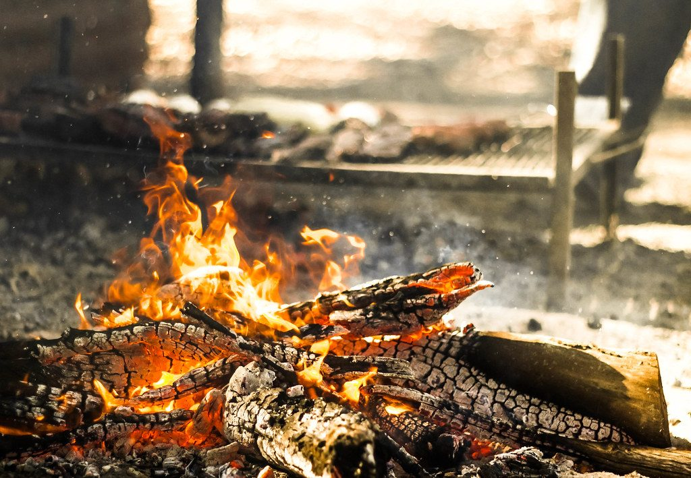
Contenido adicional · Presentación final
Investigación visual, fichas técnicas de producción y manual de imagen del equipo. Todo lo que convierte a Leñado de un documento en un lugar al que querés entrar.
CierrePor qué esta idea se vende sola
Un restaurante no se elige leyendo una lista de platos. Se elige por lo que promete la puerta, la luz, el humo y la persona que te recibe. Esta sección documenta esa promesa con referencias reales, define cómo se viste quien la sostiene y demuestra, con números, que el negocio cierra.
01Ambientación
Seis referencias fotográficas que traducen a imagen las decisiones del proyecto: fuego visible desde el salón, leña como textura, luz ámbar de 2400K, madera maciza, hierro fundido y el oficio del corte a la vista del comensal.
La parrilla abierta al público no está en el fondo: es lo primero que se ve desde la puerta y desde la vereda a través del vidrio. El naranja del fuego sobre el fondo negro es la paleta de la marca, no una decoración que la imita.
Foto: Ruanon · Flickr · CC BY-SA 2.0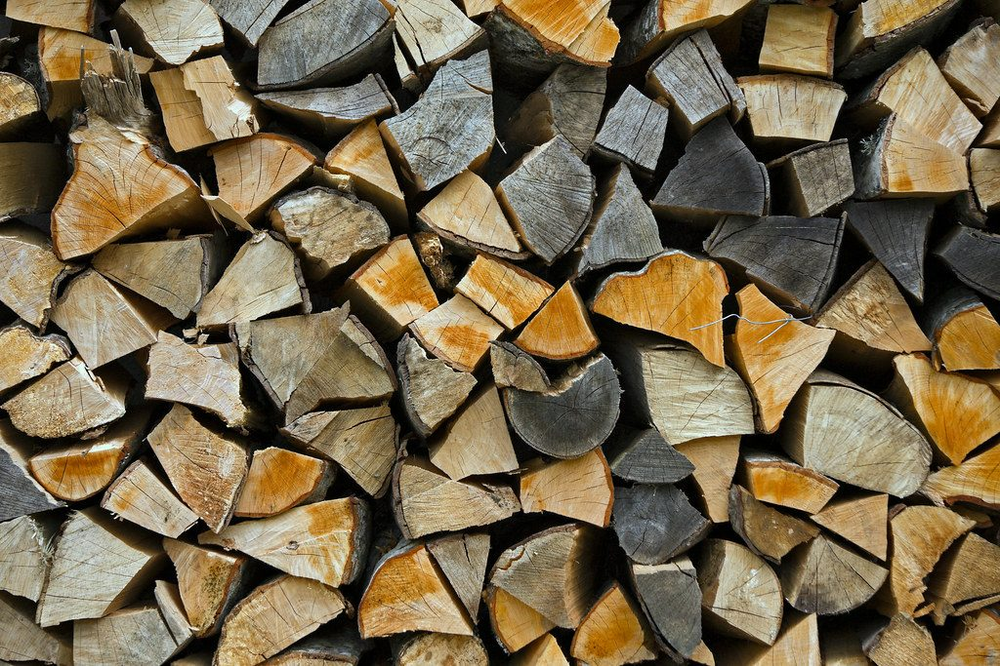
Una pared de quebracho estacionado funciona a la vez como aislante acústico, aromatizante natural y declaración de identidad. La materia prima de la técnica, exhibida como objeto de diseño.
Foto: Horia Varlan · Flickr · CC BY 2.0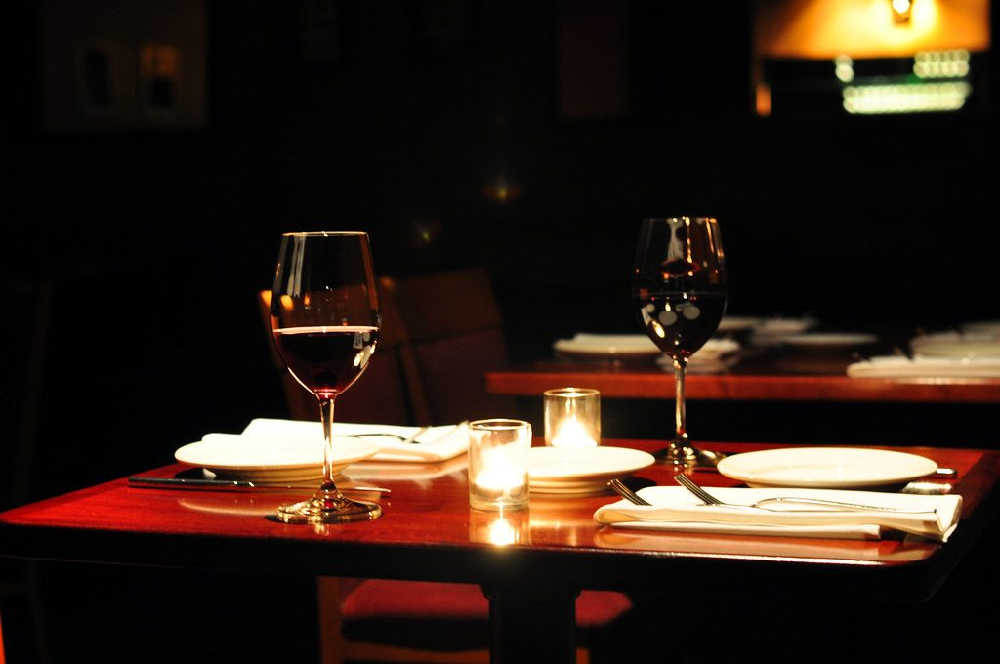
Penumbra general, spot cálido sobre cada mesa y vela de cera como complemento. El entorno desaparece y quedan iluminados solo el plato, la copa y la cara de quien está enfrente.
Foto: miketnorton · Flickr · CC BY 2.0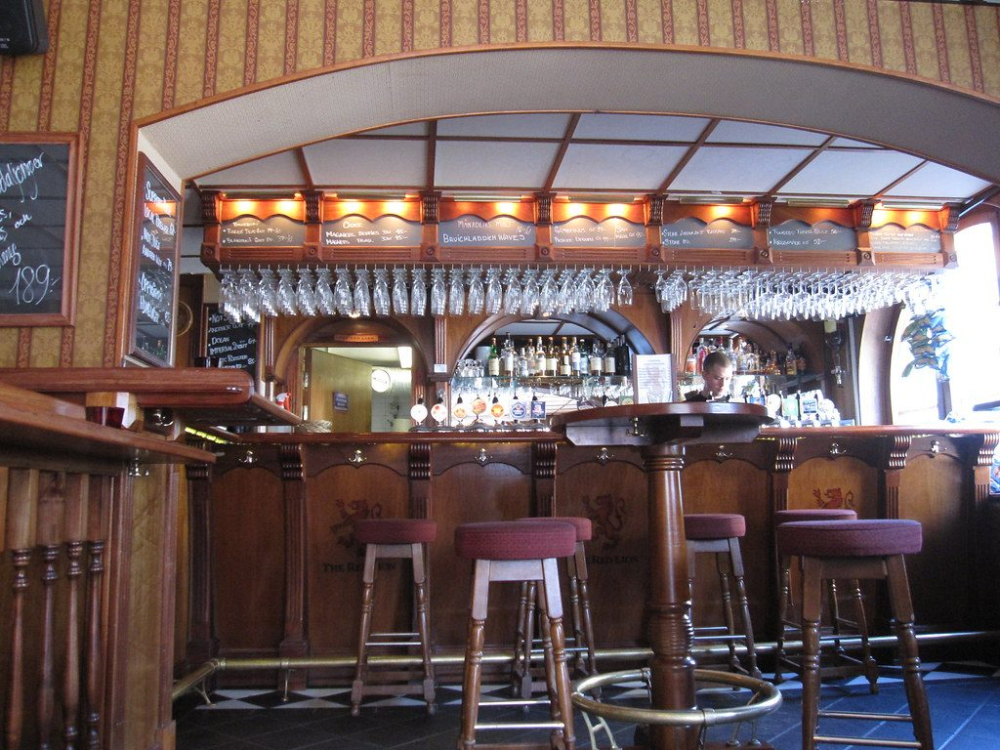
Densidad material: madera oscura, botellas retroiluminadas, cero superficies plásticas o cromadas. Sobre esa base se montan el cuero y el hierro del concepto.
Foto: Bernt Rostad · Flickr · CC BY 2.0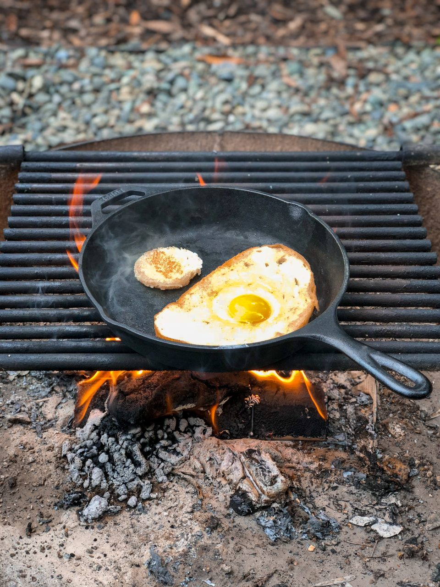
Lo que se cocina en hierro, se sirve en hierro. La guarnición no se traslada a un plato: viaja en la sartén en la que se gratinó, todavía chirriando.
Foto: Matt Bango · Stocksnap · CC0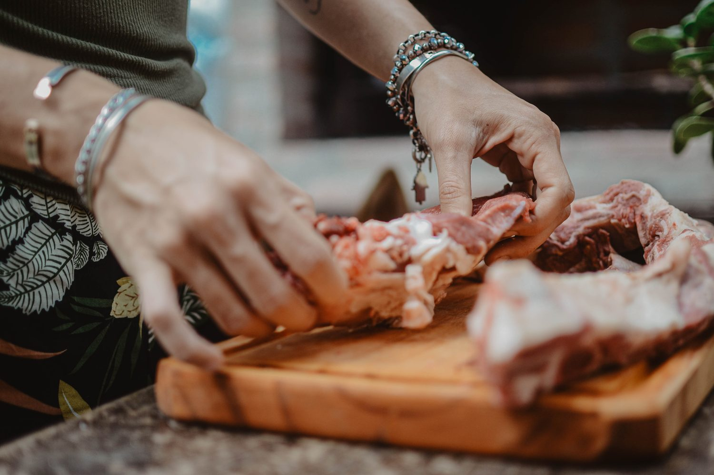
Cada mesa tiene su mesita auxiliar de trinchado —está en el plano funcional— porque el corte se hace adelante del comensal. El brisket no llega rebanado desde la cocina: se rebana ahí, y ese minuto es parte de lo que se paga.
Foto: TitiNicola · Wikimedia · CC BY-SA 4.002Imagen del equipo
El uniforme es el único elemento de marca que se mueve por el salón. Cuatro roles, una misma base — camisa negra y cuero curtido — diferenciados por el corte del delantal. Sin logos grandes, sin colores corporativos, sin nombre bordado: la indumentaria dice lo mismo que el espacio, artesanal y austera.
Ninguna prenda lleva el logo en grande y ninguna tiene color corporativo. La identidad se transmite por material y corte, no por marca impresa. Si un miembro del equipo se para contra la pared del salón, tiene que desaparecer en la penumbra: los que iluminan son el fuego y el plato, nunca el uniforme.
03Fichas técnicas de producción
Los dos extremos de la carta, documentados como se documenta en una cocina profesional: rendimiento, mermas reales, costeo por ingrediente, procedimiento paso a paso, puntos críticos de control y precio de venta derivado del food cost objetivo. Valores de insumos a precios de plaza 2026.
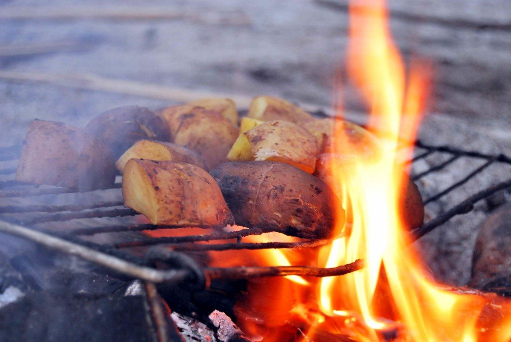
Batata entera cocida bajo las cenizas calientes de la parrilla, abierta al momento, manteca de miel y ají, escamas de sal marina. Aprovecha el calor residual del fuego que ya está encendido para el servicio: costo de combustible marginal, margen máximo.
| Ingrediente | Cant. bruta | Merma | Cant. neta | Costo unit. | Costo total |
|---|---|---|---|---|---|
| Batata calibre 300/400 g | 3,500 kg | 8 % | 3,220 kg | $1.800 /kg | $6.300 |
| Manteca sin sal | 0,300 kg | — | 0,300 kg | $12.000 /kg | $3.600 |
| Miel de flores del campo | 0,120 kg | — | 0,120 kg | $9.500 /kg | $1.140 |
| Ají molido ahumado | 0,015 kg | — | 0,015 kg | $18.000 /kg | $270 |
| Sal marina en escamas | 0,020 kg | — | 0,020 kg | $22.000 /kg | $440 |
| Leña de quebracho (imputada) | 2,000 kg | — | 2,000 kg | $450 /kg | $900 |
| Costo total de la preparación | $12.650 |
Plancha ovalada de hierro fundido precalentada, sin plato intermedio. La batata va abierta a lo largo, con la pulpa hacia arriba y la manteca ya colocada. Sin verde decorativo: el único contraste es el amarillo de la pulpa contra el hierro negro y la ceniza que queda en la piel.
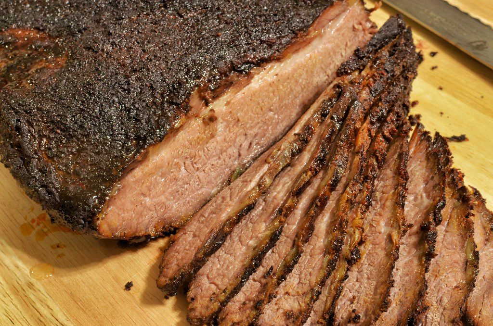
Pecho de res con rub de sal gruesa, pimienta negra, comino y ajo ahumado. Ocho horas de quebracho blanco y cuatro de mezquite, rebanado al momento frente al comensal. Es el plato que justifica el proyecto entero: nadie más en Mar del Plata sostiene esta cocción.
| Ingrediente | Cant. bruta | Merma | Cant. neta | Costo unit. | Costo total |
|---|---|---|---|---|---|
| Pecho de res entero (packer cut) | 7,000 kg | 15 % desposte | 5,950 kg | $14.800 /kg | $103.600 |
| Sal gruesa parrillera | 0,090 kg | — | 0,090 kg | $1.400 /kg | $126 |
| Pimienta negra en grano | 0,070 kg | — | 0,070 kg | $28.000 /kg | $1.960 |
| Comino molido | 0,025 kg | — | 0,025 kg | $22.000 /kg | $550 |
| Ajo ahumado en polvo | 0,030 kg | — | 0,030 kg | $34.000 /kg | $1.020 |
| Leña de quebracho blanco (fase 1) | 14,000 kg | — | 14,000 kg | $450 /kg | $6.300 |
| Leña de mezquite (fase 2) | 6,000 kg | — | 6,000 kg | $1.900 /kg | $11.400 |
| Salsa BBQ de la casa | 0,600 L | — | 0,600 L | $6.800 /L | $4.080 |
| Papel de estraza e insumos | 1,000 u | — | 1,000 u | $1.200 /u | $1.200 |
| Costo total de la preparación | $130.236 |
Tabla de madera maciza sin plato. Las rebanadas se disponen en abanico con la corteza hacia el comensal, porque el contraste entre bark oscuro, anillo rosado y fibra jugosa es el emplatado. La salsa nunca va encima: se sirve aparte para no tapar el humo.
Una carta sana necesita las dos puntas: el plato barato que casi no cuesta producir y sostiene el margen, y el plato caro que nadie más puede hacer y sostiene la identidad. Leñado tiene los dos, y ambos salen del mismo fuego.
04Diseño de platos
Referencias de emplatado para cada sección del menú. Todas comparten el mismo criterio: producto protagonista, marca de fuego visible, un solo acento de color y soporte de madera, piedra o hierro. Nunca plato blanco liso.
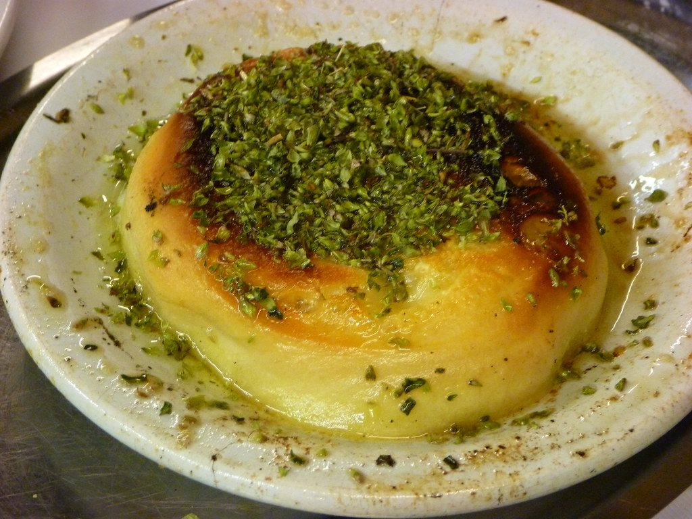
Queso como único protagonista, verde del orégano como acento, borde tostado a 400 °C.
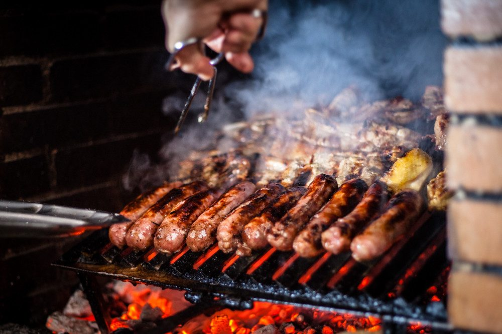
Piel tostada y humo suave de quebracho: la cocción a la vista vende tanto como el plato terminado.
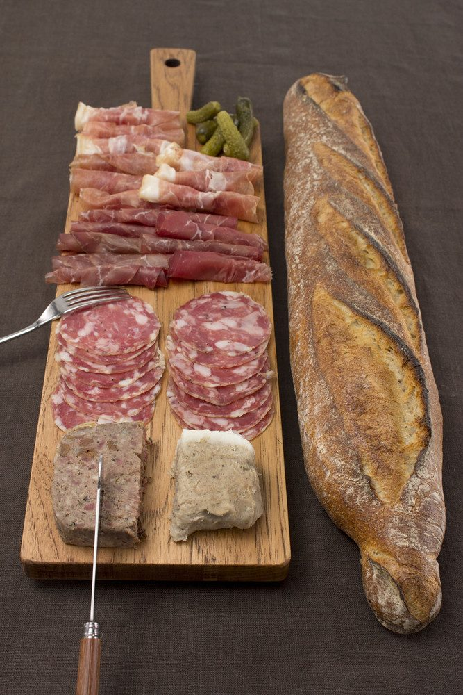
Disposición lineal con superposición parcial y la tabla misma como vajilla.
El corte transversal es el emplatado: corteza oscura, anillo rosado de humo y fibra jugosa. No necesita guarnición ni salsa encima.
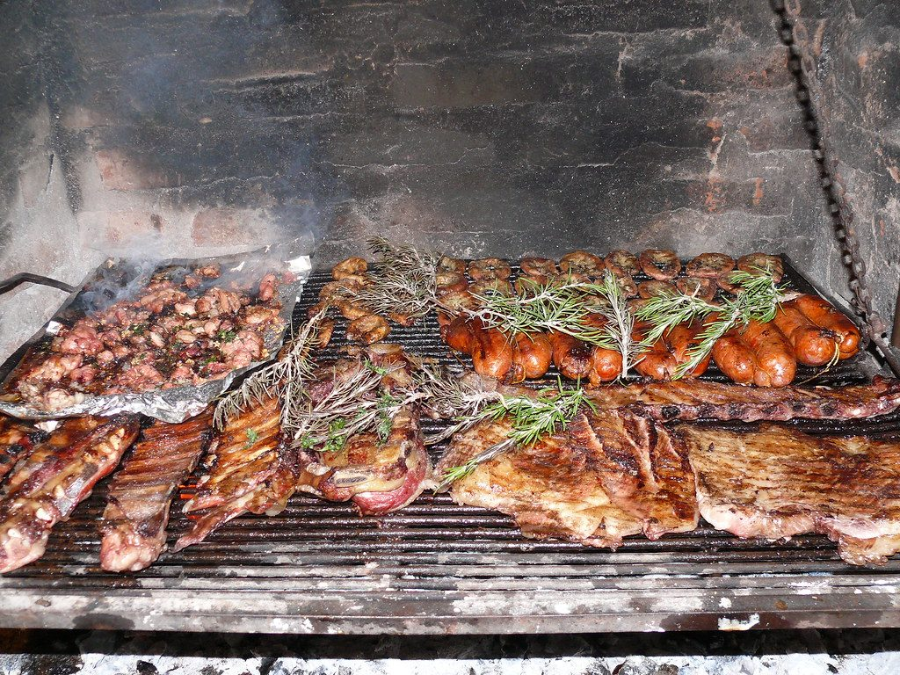
Tres horas a fuego indirecto sobre parrilla de hierro y ladrillo.
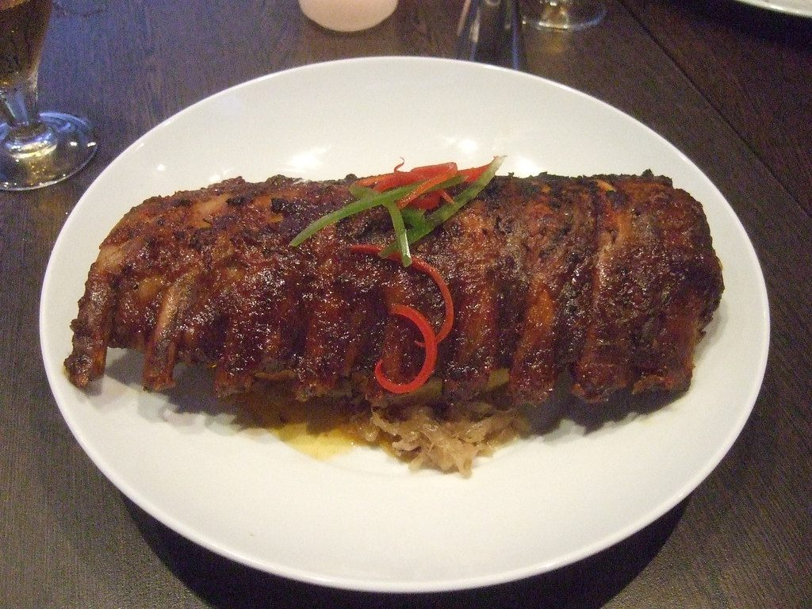
El brillo del glaseado es el recurso visual. En Leñado va sobre tabla, no sobre loza.
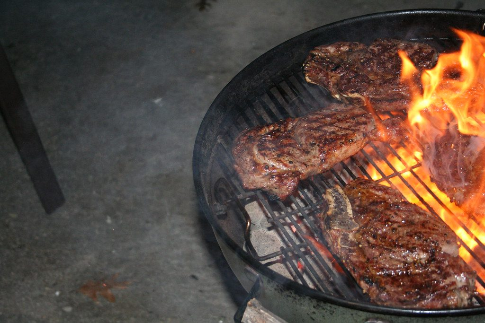
Sellado a alta temperatura con la llama lamiendo la pieza.
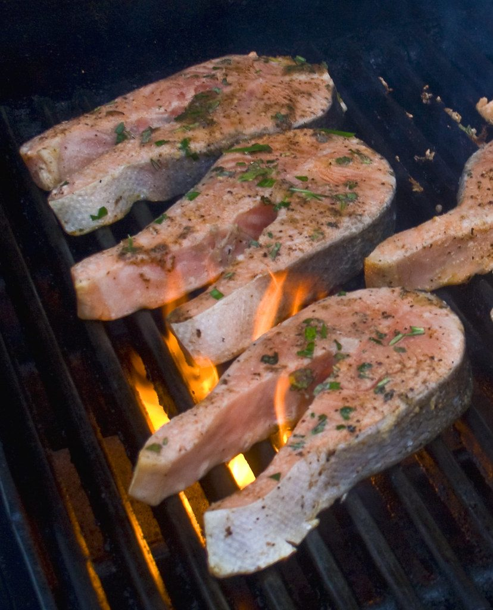
Producto del puerto local, brasa suave y aceite de hierbas sobre el fuego.
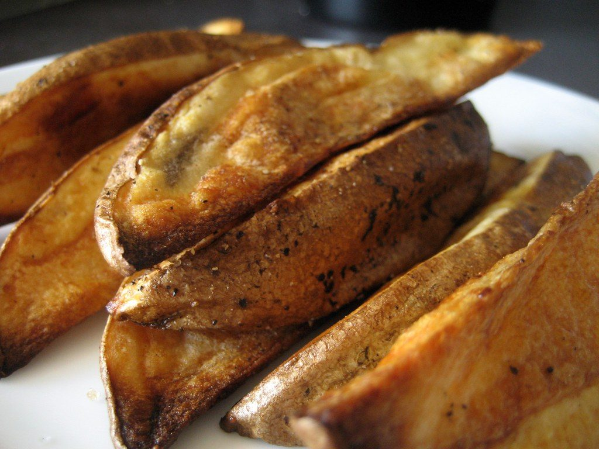
Superficie rota y caramelizada, imposible sin grasa animal a alta temperatura.
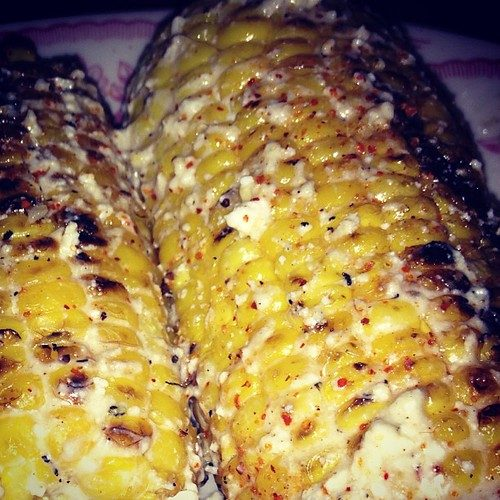
Grano quemado disparejo: la evidencia de brasa directa que pide la carta.
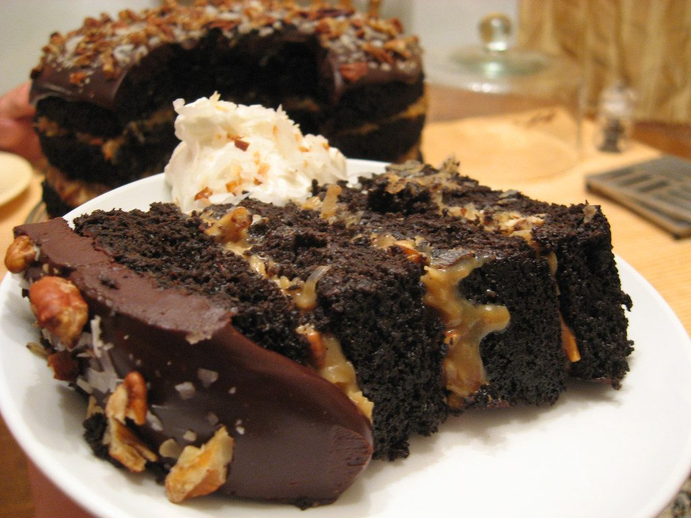
Marrones profundos sobre fondo oscuro y crema como único contraste claro.
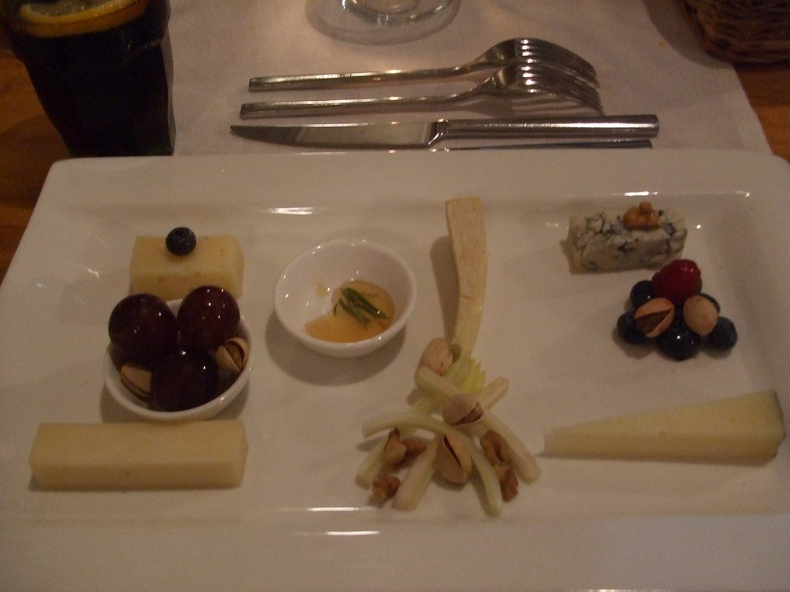
Pocas piezas separadas, cada una con su acompañamiento. En Leñado, sobre madera oscura.
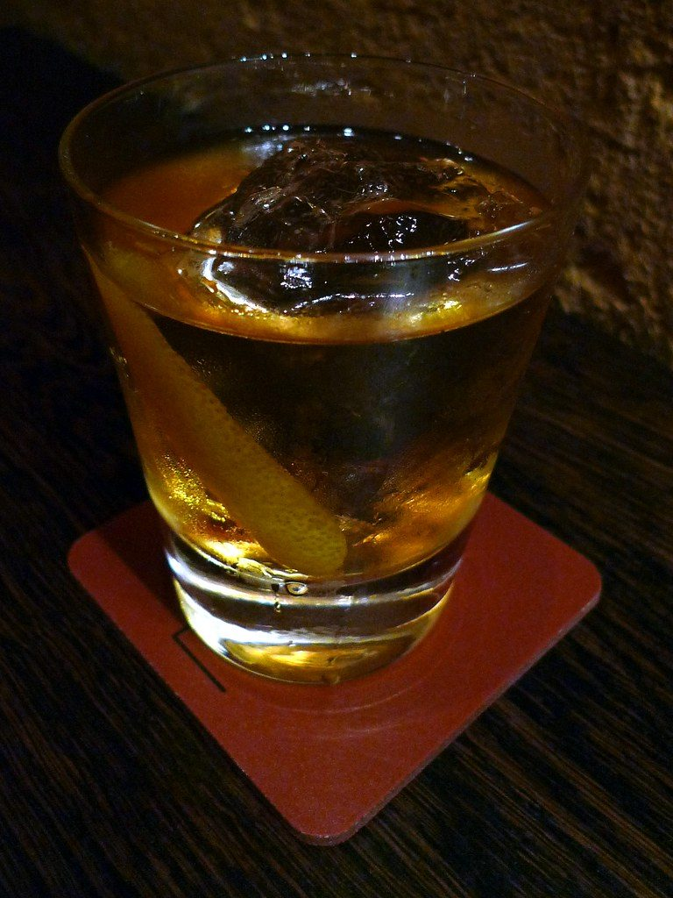
Pocos elementos, ámbar protagonista, penumbra alrededor y humo al momento.
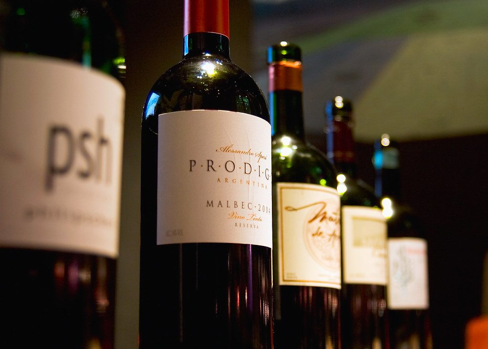
La botella como objeto de diseño, bajo el spot puntual de la mesa.
05Síntesis del relevamiento
Conclusiones transversales del análisis de las 21 referencias. Sirven de brief para la producción fotográfica propia de la carta, las redes y la prensa.
En todas las referencias que funcionan, el fuego o su evidencia directa —brasa, humo, corteza, quemado— es lo que sostiene la imagen. Confirma la decisión central del proyecto y explica el potencial de viralización en redes de la parrilla abierta.
Las referencias más débiles del relevamiento comparten un mismo defecto: loza blanca genérica que borra la identidad. Es la validación empírica de la regla de vajilla de la carta.
El verde del chimichurri, el morado del slaw, el rojo de las frutas maceradas. Sobre la base marrón y tostada del fuego, un segundo acento ya compite con el producto.
Brisket rebanado, tira de asado, pescado abierto a la espalda. En la cocina de fuego, el interior de la pieza es el argumento de venta, y rebanar frente al comensal convierte el emplatado en servicio.
Las referencias de ambientación funcionan porque el entorno desaparece y la luz cálida golpea solo mesa, plato y copa. Es la traducción fotográfica de la decisión de 2400K con velas y fuego de horno.
06Cierre
La carta está escrita, el plano está dibujado, los costos cierran, el equipo sabe cómo vestirse y cada plato tiene su referencia visual. Leñado no es una idea que falta desarrollar: es un proyecto que solo falta encender.
Anexo
Todas las fotografías provienen de bancos de imágenes con licencia Creative Commons que admiten reutilización, relevadas mediante el buscador Openverse. Se usan como referencia visual con fines académicos. Las figuras de uniformes son ilustraciones propias del proyecto.
| Imagen en esta página | Autor | Fuente | Licencia |
|---|---|---|---|
| Fuego de leña · hero y ambientación | Ruanon | Flickr | CC BY-SA 2.0 |
| Leña estacionada | Horia Varlan | Flickr | CC BY 2.0 |
| Mesa con velas | miketnorton | Flickr | CC BY 2.0 |
| Barra de madera | Bernt Rostad | Flickr | CC BY 2.0 |
| Hierro fundido sobre brasas | Matt Bango | Stocksnap | CC0 · dominio público |
| Trinchado sobre tabla | TitiNicola | Wikimedia Commons | CC BY-SA 4.0 |
| Provoleta | Laurel Fan | Flickr | CC BY-SA 2.0 |
| Chorizos criollos | Dani_vr | Flickr | CC BY-SA 2.0 |
| Tabla de fiambres | Didriks | Flickr | CC BY 2.0 |
| Brisket ahumado rebanado | jeffreyw | Flickr | CC BY 2.0 |
| Parrillada argentina | dr_pablogonzalez | Flickr | CC BY-SA 2.0 |
| Costillar glaseado | goosmurf | Flickr | CC BY 2.0 |
| Carne sobre llama directa | WmJR | Flickr | CC BY-SA 2.0 |
| Pescado a la parrilla | woodleywonderworks | Flickr | CC BY 2.0 |
| Papas rotas | Stacy Spensley | Flickr | CC BY 2.0 |
| Choclo a la brasa | Bethany Ann Khan | Flickr | CC BY-ND 2.0 |
| Postre de chocolate | kimberlykv | Flickr | CC BY 2.0 |
| Tabla de quesos | Haydn Blackey | Flickr | CC BY-SA 2.0 |
| Cóctel en barra | Ewan-M | Flickr | CC BY-SA 2.0 |
| Vinos de Mendoza | longhorndave | Flickr | CC BY 2.0 |
| Batatas en el fuego · receta | Ironchefbalara | Flickr | CC BY 2.0 |
Para uso comercial real del restaurante se recomienda producción fotográfica propia siguiendo los criterios de la síntesis. Precios de insumos a valores de plaza 2026, sujetos a actualización.